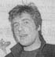

| vçsture | statistika | mâcîbas | darbinieki | absolventi | panâkumi | nodarbes | pasâkumi | saites | kontakti | |||||||||||||
absolventi |
absolvçðanas gads, tagadçjâ darba vieta, izglîtîba, iepriekðçjâs darba vietas |
|||
Ilma Èepâne |
VVV beigusi 1964.g. LR satversmes tiesas tiesnese. Beigusi LU Juridisko fakultâti. Mâcîjusies aspirantûrâ. Bijusi LU docente, LR Augstâkâs padomes deputâte, LR Satiksmes ministrijas parlamentârâ sekretâre. |
|||
Uldis Kupès |
VVV beidza 1965.g. Valmieras slimnîcas Íirurìiskâs nodaïas vadîtâjs un íirurgs. Beidzis Rîgas Medicînas institûtu. |
|||
Imants Râkins |
VVV beidza 1966.g. Latvijas Radio ziòu un politisko raidîjumu galvenais redaktors. Beidzis LVU Vçstures un filosofijas fakultâti, Kijevas Valsts universitâtes Starptautisko attiecîbu un starptautisko tiesîbu fakultâti. Bijis Latvijas TV ìenerâldirektors. |
|||
Indulis Konoðonoks |
VVV beidza 1969.g. Valmieras rajona tiesas priekðsçdçtâjs. Beidzis LVU juridisko fakultâti. Pçc augstskolas atgriezies Valmierâ un strâdâjis Valmieras rajona tiesâ par tiesnesi. |
|||
Akvelîna Lîvmane |
VVV beidza 1969.g. Dailes teâtra vadoðâ aktrise. |
|||
Dainis Turlais |
VVV beidza 1969.g. Saeimas deputâts. Beidzis Ïeòingradas Augstâko Kara skolu, Kara akadçmiju, Ìenerâlðtâba Kara akadçmiju. Piedalîjies krîþu pârvarçðanas, aizsardzîbas un droðîbas problçmu kursos ASV, Francijâ un Anglijâ. Diençjis PSRS Bruòotajos spçkos. Izstrâdâjis un îstenojis PSRS kara spçka izveðanas plânu no Afganistânas. Bijis LR Aizsardzîbas spçku komandieris, Valsts prezidenta G. Ulmaòa padomnieks, LR Iekðlietu ministrs. Pulkvedis. |
|||
Juris Dalbiòð |
VVV beidza 1972.g. Saeimas deputâts. Beidzis LV Fiziskâs Kultûras institûtu. Bijis LR Nacionâlo bruòoto spçku komandieris. Pieðíirta pulkveþa dienesta pakâpe. |
|||
Aigars Krçsla |
VVV 1978.g. beidza 8. klasi. Grupas "Jumprava" dalîbnieks. "Multikluba" îpaðnieks. "Valmieras Rokfestivâlu" organizators. Mâcîjies Cçsu mûzikas vidusskolâ. |
 | ||
Juris Jakovins |
VVV beidza 1979.g. Valmieras rajona Centrâlâs slimnîcas direktors. Beidzis Rîgas Medicînas institûtu. Viens no pirmajiem ieguva ìimenes ârsta tiesîbas Valmierâ. Privâtâs medicînas iestâdes "Vita" îpaðnieks. |
|||
Andris Íesteris |
VVV beidza 1979.g. LR Ârlietu Ministrijas valsts sekretâra vietnieks. Beidzis LVU Vçstures un filosofijas fakultâti. Mâcîjies aspirantûrâ. Ieguvis filosofijas zinâtòu kandidâta grâdu. Bijis LR vçstnieks Vînç - Austrijâ un Bonnâ - Vâcijâ. |
|||
Tâlivaldis Lasmanis |
VVV beidza 1979.g. Viens no Valmieras drâmas teâtra talantîgâkajiem aktieriem. Vairâku izrâþu galveno lomu tçlotâjs. Beidzis LV Konservatorijas Teâtra fakultâti. |
|||
Jânis Kirmuðka |
VVV beidza 1980.g. Viens no vadoðajiem Rîgas leïïu teâtra aktieriem. "Bingo Loto" vadîtâjs. Beidzis LV Konservatorijas Teâtra fakultâti. |
|||
Ìirts Íesteris |
VVV beidza 1982.g. Viens no vadoðajiem Dailes teâtra aktieriem. Beidzis LV Konservatorijas Teâtra fakultâti. |
|||
Ilva Liepiòa |
VVV beidza 1986. gadâ. LTV diktore. |
|||
Baiba Sipeniece |
VVV beidza 1988.g. LNT þurnâliste un raidîjumu veidotâja. Beigusi Rîgas Kultûras un izglîtîbas darbinieku tehnikuma Klubu nodaïu. |
|||
Viesturs Dûle |
VVV beidza 1991.g. LNT producents. Studçjis LU Filoloìijas fakultâtes þurnâlistikas nodaïâ. Strâdâjis NTV 5, Picca TV. |
|||
Ivo un Uìis Traubergi |
VVV beidza 1995.g. Talantîgi un titulçti autosportisti. Beiguði Imantas augstskolu. |
|||
Sandis Grasis |
VVV beidza 8. klasi. LNT þurnâlists. |
|||
Imants Daudiðs |
VVV beidza 8. klasi. LR vçstnieks Krievijâ. Beidzis Ivanovas Íîmijas institûtu. Bijis LPSR Augstâkâs Padomes Prezidija sekretârs, LR Prezidija sekretârs, LR Saeimas sekretârs. |
|||
Valmieras Viestura vidusskolâ ir mâcîjuðies daudzi Latvijâ populâri cilvçki. Katrs no Viesturskolas skolçniem ir kïuvis par talantîgu, veiksmîgu, atzîtu savas profesijas speciâlistu un vienkârði labu cilvçku. Lielâ mçrâ par to jâpateicas Viesturskolai un cilvçkiem, kas tajâ strâdâjuði un darbojas vçl joprojâm. |
||||
|
© Valmieras Viestura vidusskola 2003 | ||||